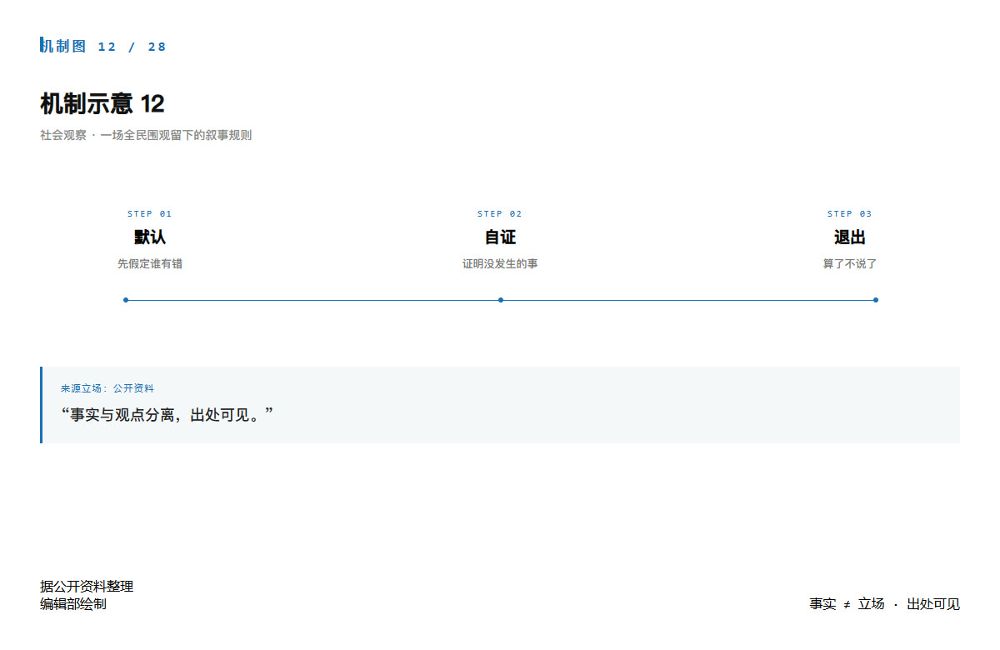

那个凌晨，谁先失去了说话的机会
社会观察 · 一场全民围观留下的叙事规则
零点二十一分，一份离婚声明发出。六分钟后，评论区落下第一个字：「啊」。
这事发生在十年前。数据来自公开报道和学术文章，网友的话逐字照抄当年的评论汇编。当事人的具体指控一个字不转述，我们只按公开材料来写。
但这事和今天的你，有关系。尤其是当你是那个「被默认先有问题」的男人。你后来在评论区里见到的很多东西，都能从这个夜里找到源头。
那个夏天全世界都在看里约。没人想得到，抢走奥运会头条的，会是一份家事。话题阅读 99 亿，同一天的奥运是 204 亿。三个当事人的私事，分走了奥运一半的注意力。
有个豆瓣用户当年列出过预言式标题：《宝强老婆为什么会出轨？男人，请学会这5件事！》《成熟的男人，懂得坦然面对背叛》。男人在这套框架里，永远是需要改进的那一个。
但真正值得注意的是谁在定义这件事。几百万条评论涌进来，最热的那些几乎全是替男方说话的。支持他，谴责对方，要求站队。
这不是偶然。平时在两性议题里，男性习惯的位置是「被指责的一方」「该反省的一方」「先承认自己有错的一方」。突然反过来，所有人都不知道怎么处理。
于是他们用了最熟悉的方式：站队，骂人，要求给出结论。没人问证据。没人问来龙去脉。这套反应后来变成了常态——每当一个男人试图讲清楚自己的处境，评论区第一句话往往是「你先反省一下自己」。
截至 8 月 27 日，男方声明微博下面 315 万条评论，最热的一条 65 万赞；女方回应微博下面 489 万条评论，最热的一条 119 万赞。声明收到的是支持，回应收到的是骂声。骂声的热度，是支持的近两倍。
这组数字很关键。它说明 From 那天起，公共场域给男性叙事留的位置就很清楚：你可以被同情，但不能被认真对待。同情是情绪，认真对待需要证据和程序，而后者在那个夜晚完全缺席。
还有个跑偏的人：河南一位乒乓球教练，恰好也叫这个名字。一觉醒来，三十多万条留言涌进来，全是冲着他来的。最后微博小秘书手动加了备注「该网友为乒乓球运动员」，才算按停。
他没惹任何人。他只是在一个错误的夜晚，拥有一个错误的名字。而那些骂他的人，也没人在乎骂错了没有。情绪到位就够了。这就是那晚立下的第一条规矩。
📌 一个值得记住的对比
男方的声明收到 65 万个赞，女方的回应收到 119 万个赞。愤怒比声援值钱。而当一个男人想认真解释时，他面对的不是反驳，是要求他先承认自己有问题。
也有长评从反方向戳：「男人出轨就是全天下男人都会犯的错……道德评判对女性还是不公平的。」这话你未必同意，但它和那几百万条骂声一样，都是那年的真声音。机制不站任何一边，只认哪种情绪能换来更多互动。
关系大了。那天晚上立下的规矩，后来长成了整套公共讨论的默认设定：男人的解释是「狡辩」，男人的沉默是「心虚」，男人的愤怒是「恼羞成怒」。你后来在评论区见到的所有「你先反省一下自己」，源头都在这里。
从那以后，一件两性事件发生时，男性视角要被听见，需要付出的成本越来越高。你得先证明自己不是在推卸责任，再证明对方确实做了什么，然后才有资格谈事实。三步走完，热点早过了。
要拆的不是那场离婚案，也不是男女谁对谁错。要拆的是那晚之后成型的叙事结构：它怎么让一类视角丧失解释权，怎么让「算了不说了」变成理性选择。这台机器不是谁设计的，但每个人都住在里面。
赫伯特·西蒙，1971 年
"A wealth of information creates a poverty of attention."
信息富足，注意力贫困。谁能抢走注意力，谁就定义了「发生了什么」。而定义权落到谁手里，谁的解释就成了默认设定。

▲ 一场围观如何变成一套叙事规则（编辑部绘制）
✍️ 你有没有过「算了不说了」的时刻？
明明想解释，话到嘴边又咽回去。评论区说说那一刻你想到了什么。觉得有用，点个赞、点个「在看」，转给也会这样沉默的人。
下一篇：2018 年，「讲道理」这件事开始加速贬值。
参考
《Vista看天下》《王宝强婚变冲击波：一场「99亿」级别的全民狂欢》，2016.08.31（99 亿与 204 亿、服务器「核爆」、乒乓球教练宋喆躺枪）；人民网传媒频道《微博的評論轉發功能對群體極化現象的影響》，2016.12（评论数与点赞数）
网友评论汇编：凤凰网神评辑录、新浪新闻网友汇编、微信公号神评论精选。逐字引用，公共语料，引用不代表本文观点；谩骂内容不予转录。
Herbert A. Simon, "Designing Organizations for an Information-Rich World", 1971。
社会观察，不站任何性别立场。事实据公开来源，未证实指控不转述、不评价。拆解规则是为了理解，不是行动指南。